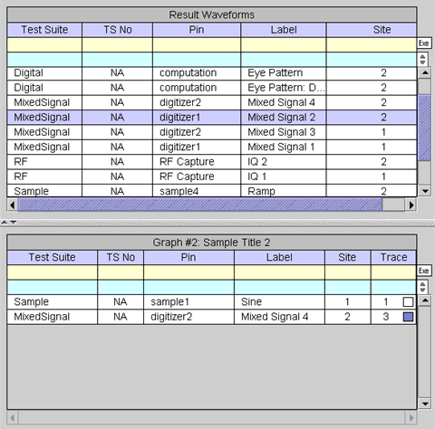
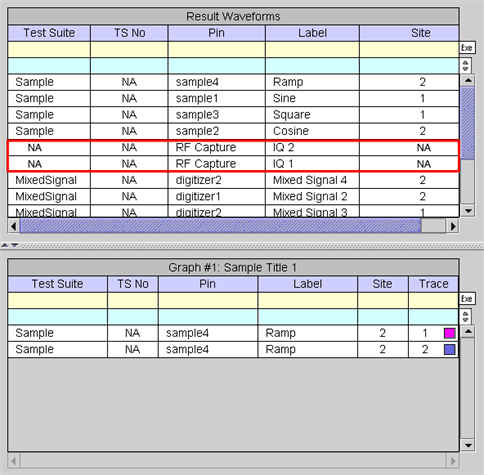

Result Waveforms
Each waveform listed in the Waveform Navigator Tool (WNT) can be categorized as a result waveform (upper table) and by selected graph (lower table). Waveforms stored in the current device file directory are in the result waveform category. These waveforms are stored in the following directory:
<current device file directory>/waveform/.result
The Result Waveforms table lists the waveforms captured during the test execution, which are stored in the current device file directory. In this table, each waveform corresponds to a row of the table. The waveforms are identified by test suite name, test suite number, pin name, test label, and site number. The test suite number (TS No) can be disabled (see Result Waveforms Shortcut Menus). The trace ID is not an identifier because the result waveforms category does not represent actual information displayed in the Data Display Panel of the Waveform Graphs Tool.

With the exception of the filter tool, search tool, and graph (this column only appears when Auto Uploading Mode is selected) cells, the cells corresponding to the stored waveforms cannot be edited.
The letters "NA" appear in a cell if the corresponding identifier is not applicable for the waveform. For example, a waveform generated with the User Defined Function does not have a test suite name, test suite number, or site number because a User Defined Function is not related to the general test execution. Refer to the following screen.
